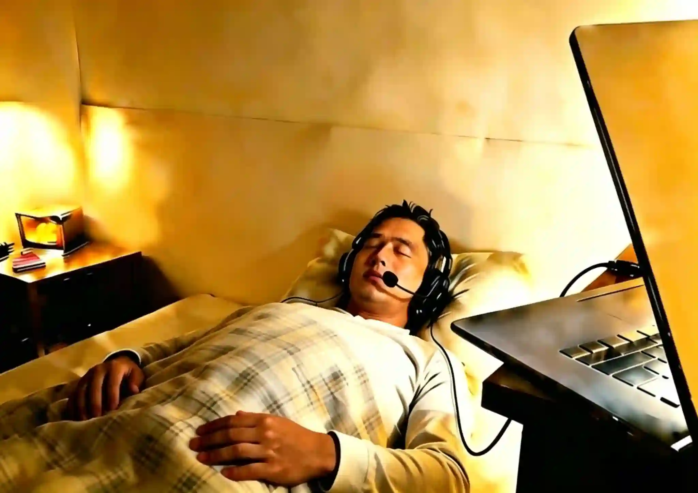
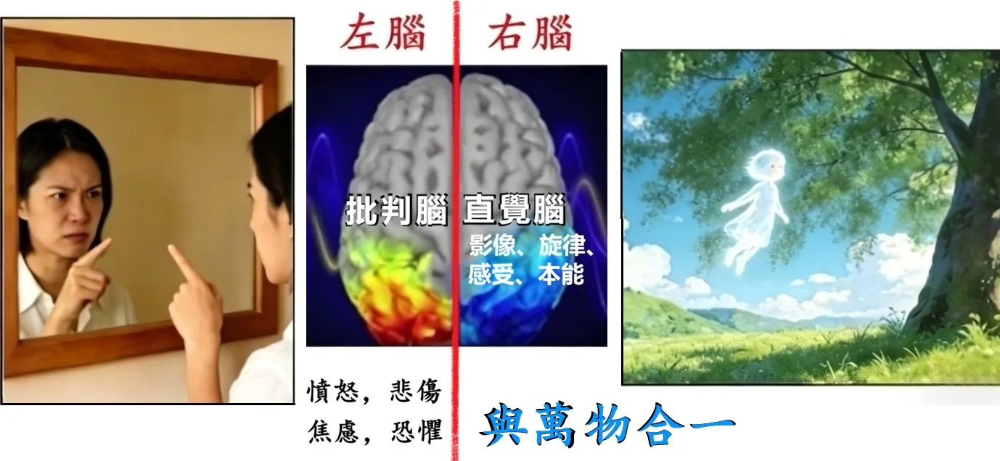
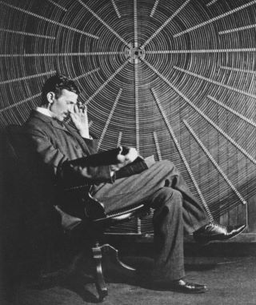
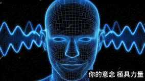
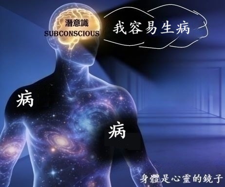
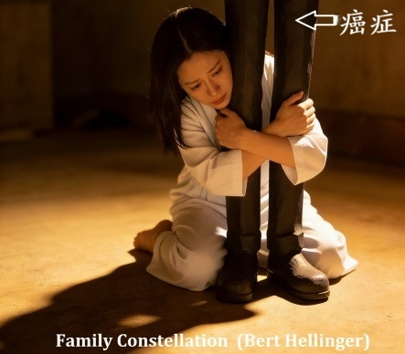
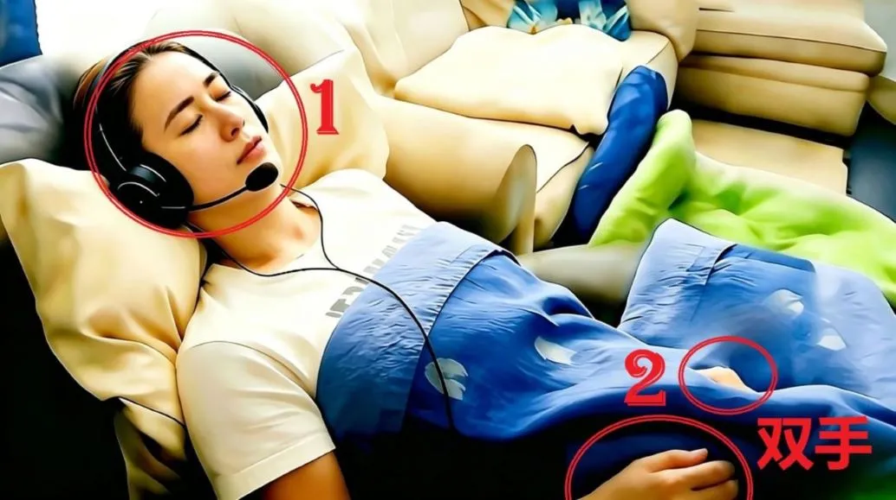

(1) 先進行 1~2 小時 "电脑屏幕" 面对面 深度访谈：
了解你希望解開的困擾、心结、與疑惑
(2) 展開 1~2 小时 催眠 引导：进入潜意识状态，
连接内在智慧，探寻问题根源與答案
(3) 回顾 & 总结：整合收获，清晰后续方向
全程線上 Zoom 視訊進行，無需線下奔波，
在熟悉的家中房間裡，享受專屬於你的定制身心靈療癒。
催眠冥想是 "放鬆 + 專注" 的特殊意識狀態 (不是睡著),
你全程保持 意識 與 自主控制，
被動跟隨引導，更容易進入深層放鬆、觸達深層潛意識。

在日常生活中，左脑担任着 理性逻辑 & 质疑批评 的角色，并會随着 情绪起伏 而一直 波动不定；
而 右脑 所蕴含的 纯真直觉，一直被左脑的 過度理性 所壓制。
久而久之，你渐渐忽略了右脑的聲音，也遗失了内在的本真感知。

催眠的目的，正是引導你的左脑慢慢安静下来，卸下過度的分析防禦，讓右脑的智慧浮出表面，
讓你重新连接内在的力量（潜意識）、認識真正的、多维度的自己。
Nikola Tesla 说，宇宙的一切都是 能量、频率、震动。

你的脑波、你的意图，都是能量频率信號；
你潜意識里的每一個念頭，
都會被身體的每一個细胞默默聆聼、如實回應。


小孩不想上学时，跟妈妈说發燒頭疼了，他的體温就真的高起来了。
醫生開维他命给你，你以为是特效藥，结果你的病好起来了。
你的身體是一個宇宙，而你，就是这個宇宙的神。
你身體的每一個细胞都深爱着你，無條件地對你唯命是從。
有一位妻子，與丈夫早已形同陌路。
當她确诊癌症后，在心理咨询中发现了一個真相 — 她的潜意識里，其實不願這個病症消失。
因为只有在生病后，丈夫才會放下隔阂，送她去看醫生、说上寥寥数语，
这個久违的互動，成了她潜意識里不願放手的"温暖"。

而這份 "潜意識" 的想法，與她的 "意識" 完全相悖。
當被點破時，她的意識瞬间崩溃，
疯狂破口大骂："神经病啊！哪有人會不想康復的！！！！"
你知道 你潜意識里 真正的想法吗？
(1) 先進行 1~2 小時 "电脑屏幕" 面对面 深度访谈：
了解你希望解開的困擾、心结、與疑惑
(2) 展開 1~2 小时 催眠 引导：进入潜意识状态，
连接内在智慧，探寻问题根源與答案
(3) 回顾 & 总结：整合收获，清晰后续方向
就像健身房教练與客户的關係：客户必须“願意”按照教练指引、主動完成训练。
教练要求做10下俯卧撑，客户就要認真投入、确實執行。
如果自身不願行動，就算教练再專業，也無法帮你達成健身目標。
同理，催眠师在引導個案时，也需要個案充分配合、全心信任、彻底放鬆。
只有當個案 “願意” 讓自己的理性左脑安静下来，才能讓意職轉为 θ (希塔) 脑波状態，潜意識才能顯现出来。
有些人聼過、读過量子催眠案例中的神奇经歷，便對自己的催眠體验充满期盼，
如同孩子攀上墙頭，眼巴巴盼着新鲜有趣的事發生。
请勿過度期待，否则左脑持续亢奋活躍，難以真正静下心来。
讓你的批判左脑坐下、静静躺着，聽聽你的潜意識说什么。

用心看着下方的圖像，停留一分鐘，想象自己在這间老屋里，
静静感受内心泛起的情绪，试着描述你在圖像中觀察到的、以及你的直觉感受。
然后才往下滑，看看你属于下述三种個案中的哪一種。
(source: Candace Craw-Goldman website)
個案 1：
這是一個老舊的房子。
里面有一個炉灶、幾件家具，
桌子上擺着一些餐具。
催眠师：就这些吗？
個案 1：嗯~~ 地上還有一把翻倒的椅子。
我想應该就這些了。
哦！等一下，门外还有一個水车轮子。
個案 2：
我在一间老屋里。
地上是夯土地面，天花板上有木梁。
炉灶里生着火，我觉得锅里是海带炖排骨。
屋里有简单的家具，桌上有碗筷水杯。
地上有一把翻倒的椅子，看起来像是有人匆忙離開时弄翻的。
门外有一個木制的水车轮。
催眠师：你還注意到别的什麽吗？還能再多描述一些吗？
個案 2：儘管屋内炉火熊熊燃烧，但不知为何，心底掠过一丝苍凉感。
或许是因为那把翻倒的椅子。。。。。
这里除了我，没有别人，我觉得有點孤单。
個案 3：
我在爷爷以前那间鄉下房子里。
现在是冬天，我坐了很久的车，刚到这里。
爷爷做了土豆炖五花肉，太香了！
我们準備擺桌子吃晚饭，就聼到那頭牛痛苦的叫聲。
爷爷急着去查看，匆忙间把椅子都碰翻了。
催眠师：那頭牛在哪里？
個案 3：哦，它就在房子旁邊那個牛棚里。
它應该是要生小牛了。
我其實還记得那頭牛，它叫来福。
我真的很想念鄉下生活，也特别想念爷爷。
個案3 也可能说：

此6分钟音频，带你闭上眼睛、進行呼吸减壓。
参考动图，觀想你在這個能量泡泡裏，更易进入冥想與放鬆状態。
音频搭载左右双耳節拍频率，務必全程佩戴耳机聆听。
使用 Hi-Fi 高清音質、無降噪的 有线 耳机，
可感知完整波频，效果更佳。
列清单： 回想人生中所有渴望得到解答的事情，将其一一写下，我们會在面谈时讨論你这份清单。
环境：
被催眠者在極度放鬆下，说话音量會变得很低，请一定、千萬、務必讓麦克風擺在嘴巴附近。
镜頭必须清楚看见你的 全脸 及 双手。

人民币 2,222
台幣 9,878
美金 329
付款后即可预约具体日期
(来源: YouTube 简单易懂的双缝干涉實验 )
结论炸裂，多的是 你不知道的事